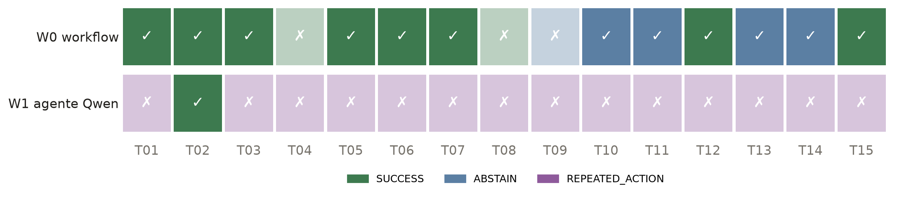
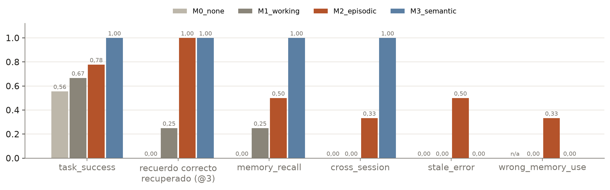

¿Mejora la tarea si un LLM elige las herramientas y recuerda lo que hizo? Lo medimos con el mismo controlador, las mismas herramientas y los mismos límites.
Una alerta necesita varias operaciones encadenadas y una terminación verificable.
Corpus, qrels, recuperador, herramienta y Qwen2.5-0.5B se importan desde parcial/src sin modificarlos. PC1 mostró que este modelo no aplica la regla; aquí preguntamos si al menos coordina las herramientas.
Severidad con la regla de la PC1; evidencia anotada leyendo los passages del corpus.
| tipo | tareas | qué exige |
|---|---|---|
| ordinarias | T01–T08 | buscar + calcular + contrastar; T07 compara SPY e IWM |
| fallo de herramienta | T09–T12 | T09 fecha no hábil (real); T10–T12 inyectados |
| abstención | T13–T15 | activo sin datos, fecha de 2008, afirmación falsa |
| memoria | S1–S3 | 9 interacciones, 7 sesiones: recordar, actualizar, interferir |
| decide… | W0 workflow | W1 agente Qwen | controlador (ambos) |
|---|---|---|---|
| siguiente acción | plan fijo | LLM: JSON con reason | allowlist + contrato |
| cuándo parar | al acabar el plan | LLM (finish) | pasos, llamadas, tiempo, repetición |
| respuesta | regla ≥ medium → alert | LLM | acepta solo lo observado |
| ejecutar herramientas | — | — | siempre el controlador |
ReAct acotado: reason → acción → observación validada → nueva decisión.
Errores como datos: el modelo ve kind, code y retryable, nunca el mensaje libre.
Herramientas: search_evidence, compute_signal (del parcial) y read_passage (nueva).
| política | task_success | terminación correcta | latencia media | tokens / tarea | acciones repetidas |
|---|---|---|---|---|---|
| W0 workflow | 0,80 (12/15) | 0,93 | 1,8 s | 0 | 0 |
| W1 agente Qwen | 0,07 (1/15) | 0,07 | 38,3 s | 3 020 | 14 |
W1 llega a la señal correcta en 8 de 11 tareas (W0: 10). Lo que no sabe es decidir que ya terminó.
Ejecución local: no hay costo en dinero. El costo es ~21× más tiempo y 45 295 tokens en total.

W0 falla 3: T04 y T08 citan passages no pertinentes; T09 no repara la fecha no hábil.
W1 nunca emite una alerta falsa: en T10, T11, T13 y T14 no responde, aunque se corta por repetición.
Ambas mejoras se logran con routing en el workflow: una rama para date_not_trading_day y una segunda búsqueda si la evidencia no menciona el evento.
| prueba guionizada (no LLM) | stop_reason | ok |
|---|---|---|
| R1_repeated_action | REPEATED_ACTION | ✓ |
| R2_budget_exhausted | MAX_STEPS | ✓ |
| R3_invalid_output | INVALID_OUTPUT | ✓ |
| R4_unsupported_finish | INVALID_OUTPUT | ✓ |
| R5_transient_errors | TOOL_ERROR | ✓ |
| R6_no_progress | NO_PROGRESS | ✓ |
| R7_tool_timeout | TIMEOUT | ✓ |
Dentro del benchmark:
T12 · transitorio que se recupera: attempts = 2.
T10 · fuente caída: W0 se abstiene.
T11 · precios corruptos: output_contract, nunca llega a ser una señal.
7/7 pruebas y 20 pruebas unitarias pasan.
| qué guarda | cómo recupera | persiste | invalida | |
|---|---|---|---|---|
| M0 | nada (solo estado de la tarea) | — | — | — |
| M1 working | resultados de la sesión | los 3 más recientes | no | — |
| M2 episódica | episodio: acciones, resultado, errores | relevancia + recencia + importancia | JSONL | no |
| M3 semántica | hecho con procedencia y versión | e5 + FAISS | JSONL | superseded |
Escribe el controlador, solo con campos validados: sin prompts ni texto libre del modelo.
S2: la fecha avanza al 30-ago-2024 y la alerta medium del 5-ago queda obsoleta.
| task_success | memory_recall | recuerdo correcto mostrado | tokens memoria | |
|---|---|---|---|---|
| M0 | 0,22 | 0,00 | 0/4 | 0 |
| M1 | 0,11 | 0,00 | 1/4 | 23 |
| M2 | 0,11 | 0,00 | 4/4 | 205 |
| M3 | 0,11 | 0,00 | 2/4 | 137 |
M0 «gana» por un acierto por casualidad: usó 2023-03-13, la fecha del ejemplo del prompt.
En S3-3 repite esa fecha para una pregunta sobre el COVID y falla.
Un acierto sin citar el recuerdo no cuenta como recall.
Primero el episodio vigente E005 → calcula 2024-08-30 · low. Sin memoria no tiene la fecha.
Luego repite y no termina.
Pone E001 en evidence_ids en vez de memory_ids.
Rechazado 2 veces → INVALID_OUTPUT.
«Alerta del COVID»: queda primero E008 (aranceles, más reciente).
Calcula 2025-04-08: interferencia.

M2 en S2-3: la alerta medium del 5-ago (2,40) queda por delante de la low del 30-ago (2,25) → stale 0,50.
Lector determinista añadido después de ver a Qwen; no reemplaza al experimento oficial.
¿Basta un workflow? Sí: 12/15 con 0 tokens.
¿Aporta el LLM? Solo reformuló una búsqueda (T04).
¿Qué memoria? Semántica con versión e invalidación.
¿Cuándo empeora? Autonomía: ~21× tiempo. Episódica: recuerdos obsoletos.
Un modelo de 0.5B · 15 tareas y 9 interacciones · anotación propia · parar ante la primera repetición es estricto · diagnóstico posterior declarado.
La seguridad la sostiene el controlador, no el modelo.